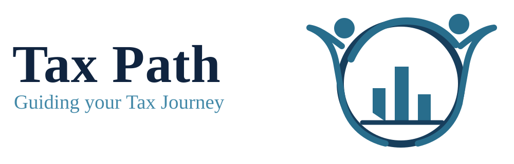

Flat vs reducing interest
Flat-rate interest is calculated on the original principal. Reducing-balance interest is calculated on the outstanding principal. The same stated rate can mean a much higher cost under a flat method.
Compare both methods →
Sign inShort, practical explanations to help you ask better questions and make informed money decisions.
Flat-rate interest is calculated on the original principal. Reducing-balance interest is calculated on the outstanding principal. The same stated rate can mean a much higher cost under a flat method.
Compare both methods →Simple interest is based on the original principal. Compound interest earns interest on principal plus accumulated interest, according to the compounding schedule.
Try the calculator →Market values can fall, past returns do not guarantee future returns, and diversification cannot eliminate all risk. Match products to your time horizon.
Payment history, credit utilisation, length of credit history and recent applications can affect credit scores. Check your credit report for errors.
Be cautious of guaranteed high returns, urgency, requests for OTPs or remote access, and unofficial payment links. Verify intermediaries through official websites.
Savings accounts prioritise access to money; fixed deposits may offer a different interest rate and lock-in. Compare liquidity, penalties and applicable tax.